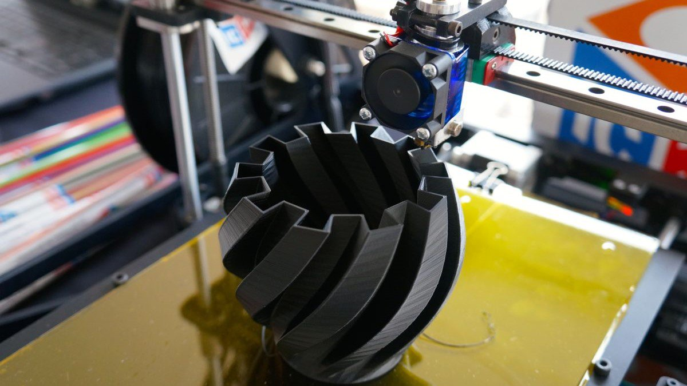
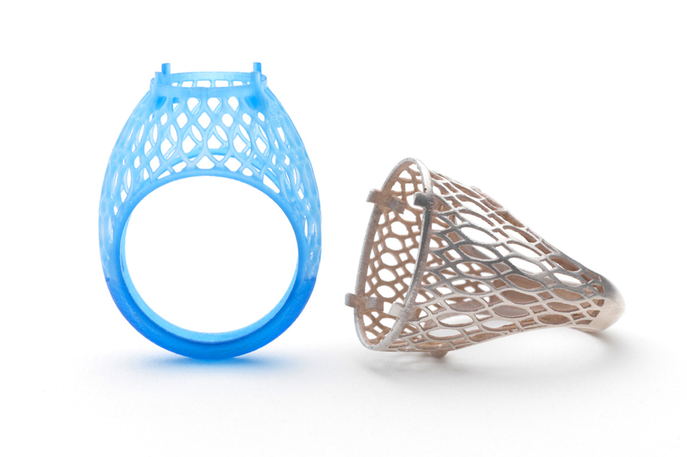
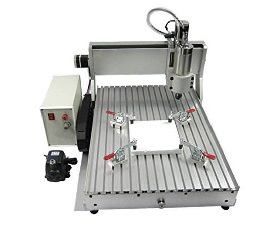
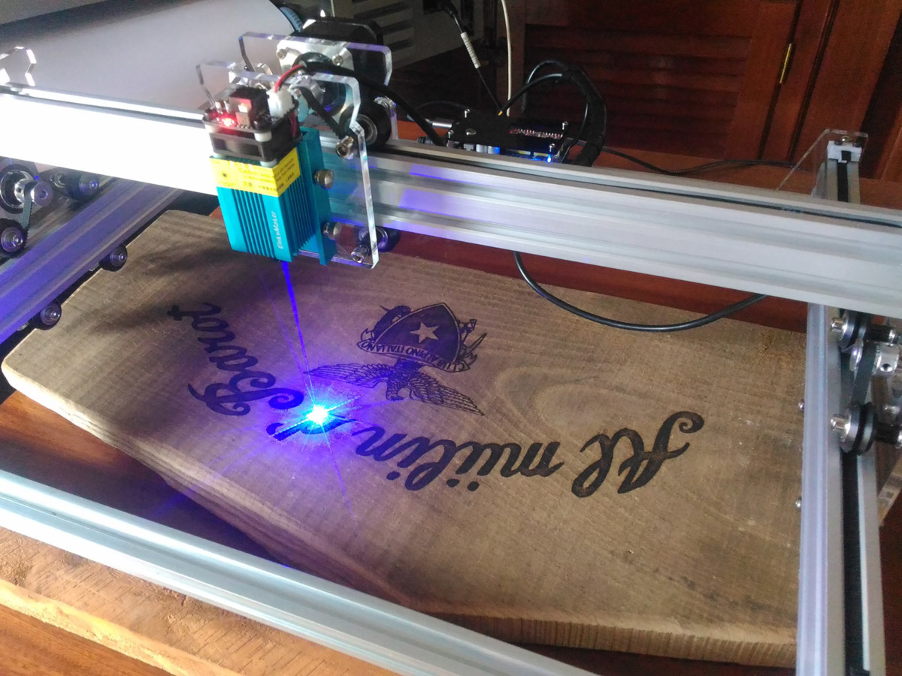

Le tecnologie
Stampa 3D a filamento
Per la realizzazione (in plastica: PLA, ABS, Nylon, Ibridi vari) di prototipi
o di prodotti finiti, come box,
cosplay, oggetti di design.
Stampa 3D a resina
Usata soprattutto in gioielleria e nel dentale grazie all'altissima risoluzione
ed alla disponibilit�
di resine castabili.
Lavori con CNC
Per la foratura, incisione, fresatura di legno, metalli e pietre, mediante
macchine a controllo
numerico che permettono lavori di precisione partendo da un file CAD.
Lavori con il Laser
Per il taglio e l'incisione di legno, plastica ed altri materiale morbidi.
Per la realizzazione di foto su legno e di circuiti stampati. Sempre a controllo numerico.